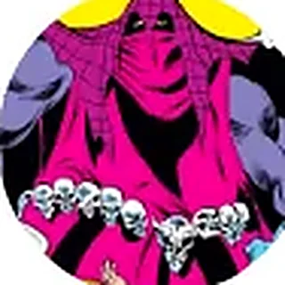

Encyclopédie › Entités abstraites
Mort · Mal · Magie
Interprétation1ʳᵉ apparition · Iceman #12 relations
Voir sur la carte · Les Axes
Oblivion : le néant, l’effacement, ce qui reste quand tout a été oublié.
Entités abstraites · Mort · Mal · Science

Entités abstraites · le néant